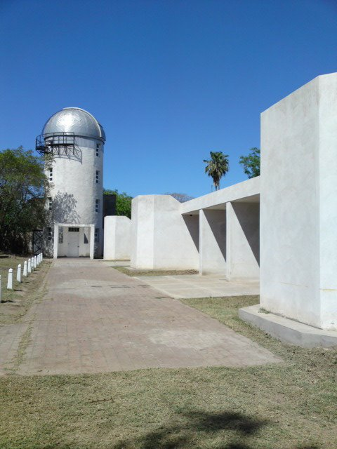
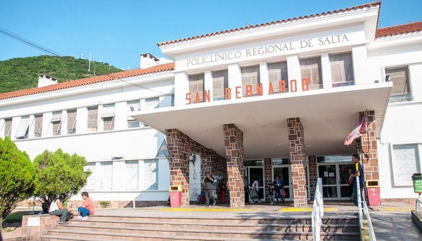

Denominada la CIUDAD DE LA FAMILIA, conjuga la concentración de modernas confiterías, discos y pubs que se extienden a lo largo de las avenidas principales Chiozza y San Bernardo, con la tranquilidad de sus calles arboladas.
San Bernardo es también mencionada como "La Perla de La Costa" por ser el centro urbano con mayor movimiento comercial turístico del partido y por la belleza de la ciudad.

Observatorio de La Costa: Ubicado en avenida Chiozza 2440, brinda la posibilidad de observar todos los planetas del sistema solar, galaxias y constelaciones. Cuenta con una Sala de Proyección y un sensor que mide el deterioro de la Capa de Ozono.

En sus distintas salas se pueden apreciar una muestra fotográfica de la fundación de San Bernardo y sus pioneros. Abre sus puertas en calle San Juan 2441.